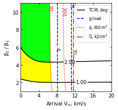
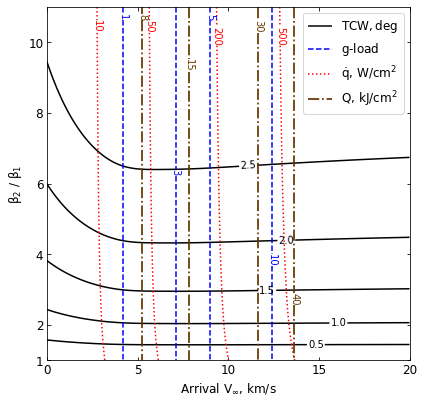

08 - b - Titan - Feasibility Charts - Lift¶
[1]:
from AMAT.planet import Planet
from AMAT.vehicle import Vehicle
import numpy as np
from scipy import interpolate
import matplotlib.pyplot as plt
from matplotlib import rcParams
from matplotlib.patches import Polygon
import os
[25]:
# Create a planet object for Titan
planet=Planet("TITAN")
# Load an nominal atmospheric profile with height, temp, pressure, density data
planet.loadAtmosphereModel('../atmdata/Titan/titan-gram-avg.dat', 0 , 1 , 2, 3)
[11]:
vinf_kms_array = np.linspace( 0.0, 20.0, 11)
betaRatio_array = np.linspace( 1.0, 11.0 , 11)
[12]:
v0_kms_array = np.zeros(len(vinf_kms_array))
v0_kms_array[:] = np.sqrt(1.0*(vinf_kms_array[:]*1E3)**2.0 + 2*np.ones(len(vinf_kms_array))*planet.GM/(planet.RP+1000.0*1.0E3))/1.0E3
overShootLimit_array = np.zeros((len(v0_kms_array),len(betaRatio_array)))
underShootLimit_array = np.zeros((len(v0_kms_array),len(betaRatio_array)))
exitflag_os_array = np.zeros((len(v0_kms_array),len(betaRatio_array)))
exitflag_us_array = np.zeros((len(v0_kms_array),len(betaRatio_array)))
TCW_array = np.zeros((len(v0_kms_array),len(betaRatio_array)))
[13]:
beta1 = 20.0
runID = 'titan-drag-'
[14]:
for i in range(0,len(v0_kms_array)):
for j in range(0,len(betaRatio_array)):
vehicle=Vehicle('DMVehicle', 150.0, beta1, 0.0, 3.1416, 0.0, 0.10, planet)
vehicle.setInitialState(1000.0,0.0,0.0,v0_kms_array[i],0.0,-4.5,0.0,0.0)
vehicle.setSolverParams(1E-5)
vehicle.setDragModulationVehicleParams(beta1,betaRatio_array[j])
underShootLimit_array[i,j], exitflag_us_array[i,j] = vehicle.findUnderShootLimitD(6000.0, 1.0, -80.0,-4.0,1E-10,1700.0)
overShootLimit_array[i,j] , exitflag_os_array[i,j] = vehicle.findOverShootLimitD (6000.0, 1.0, -80.0,-4.0,1E-10,1700.0)
TCW_array[i,j] = overShootLimit_array[i,j] - underShootLimit_array[i,j]
print('VINF: '+str(vinf_kms_array[i])+' km/s, BETA RATIO: '+str(betaRatio_array[j])+' TCW: '+str(TCW_array[i,j])+' deg.')
np.savetxt('../data/jsr-paper/titan/'+runID+'vinf_kms_array.txt',vinf_kms_array)
np.savetxt('../data/jsr-paper/titan/'+runID+'v0_kms_array.txt',v0_kms_array)
np.savetxt('../data/jsr-paper/titan/'+runID+'betaRatio_array.txt',betaRatio_array)
np.savetxt('../data/jsr-paper/titan/'+runID+'overShootLimit_array.txt',overShootLimit_array)
np.savetxt('../data/jsr-paper/titan/'+runID+'exitflag_os_array.txt',exitflag_os_array)
np.savetxt('../data/jsr-paper/titan/'+runID+'underShootLimit_array.txt',underShootLimit_array)
np.savetxt('../data/jsr-paper/titan/'+runID+'exitflag_us_array.txt',exitflag_us_array)
np.savetxt('../data/jsr-paper/titan/'+runID+'TCW_array.txt',TCW_array)
VINF: 0.0 km/s, BETA RATIO: 1.0 TCW: 0.0 deg.
VINF: 0.0 km/s, BETA RATIO: 2.0 TCW: 0.7737579075910617 deg.
VINF: 0.0 km/s, BETA RATIO: 3.0 TCW: 1.227739846384793 deg.
VINF: 0.0 km/s, BETA RATIO: 4.0 TCW: 1.549308853886032 deg.
VINF: 0.0 km/s, BETA RATIO: 5.0 TCW: 1.7978653906757245 deg.
VINF: 0.0 km/s, BETA RATIO: 6.0 TCW: 1.9999547607840213 deg.
VINF: 0.0 km/s, BETA RATIO: 7.0 TCW: 2.1702169561976916 deg.
VINF: 0.0 km/s, BETA RATIO: 8.0 TCW: 2.316864370714029 deg.
VINF: 0.0 km/s, BETA RATIO: 9.0 TCW: 2.445569671504927 deg.
VINF: 0.0 km/s, BETA RATIO: 10.0 TCW: 2.5601319379129563 deg.
VINF: 0.0 km/s, BETA RATIO: 11.0 TCW: 2.6632198371662525 deg.
VINF: 2.0 km/s, BETA RATIO: 1.0 TCW: 0.0 deg.
VINF: 2.0 km/s, BETA RATIO: 2.0 TCW: 0.8848737447515305 deg.
VINF: 2.0 km/s, BETA RATIO: 3.0 TCW: 1.3967351393439458 deg.
VINF: 2.0 km/s, BETA RATIO: 4.0 TCW: 1.7553337994140747 deg.
VINF: 2.0 km/s, BETA RATIO: 5.0 TCW: 2.0301672345049155 deg.
VINF: 2.0 km/s, BETA RATIO: 6.0 TCW: 2.2520820825884584 deg.
VINF: 2.0 km/s, BETA RATIO: 7.0 TCW: 2.437802051546896 deg.
VINF: 2.0 km/s, BETA RATIO: 8.0 TCW: 2.597135909181816 deg.
VINF: 2.0 km/s, BETA RATIO: 9.0 TCW: 2.736473498360283 deg.
VINF: 2.0 km/s, BETA RATIO: 10.0 TCW: 2.860146860777604 deg.
VINF: 2.0 km/s, BETA RATIO: 11.0 TCW: 2.971157907246379 deg.
VINF: 4.0 km/s, BETA RATIO: 1.0 TCW: 0.0 deg.
VINF: 4.0 km/s, BETA RATIO: 2.0 TCW: 0.9531357651176222 deg.
VINF: 4.0 km/s, BETA RATIO: 3.0 TCW: 1.4965508040004352 deg.
VINF: 4.0 km/s, BETA RATIO: 4.0 TCW: 1.8738568225162453 deg.
VINF: 4.0 km/s, BETA RATIO: 5.0 TCW: 2.1612526772260026 deg.
VINF: 4.0 km/s, BETA RATIO: 6.0 TCW: 2.3925352479673165 deg.
VINF: 4.0 km/s, BETA RATIO: 7.0 TCW: 2.585490266312263 deg.
VINF: 4.0 km/s, BETA RATIO: 8.0 TCW: 2.75035973764534 deg.
VINF: 4.0 km/s, BETA RATIO: 9.0 TCW: 2.8947456349887943 deg.
VINF: 4.0 km/s, BETA RATIO: 10.0 TCW: 3.0224248990743945 deg.
VINF: 4.0 km/s, BETA RATIO: 11.0 TCW: 3.13696334825363 deg.
VINF: 6.0 km/s, BETA RATIO: 1.0 TCW: 0.0 deg.
VINF: 6.0 km/s, BETA RATIO: 2.0 TCW: 0.9694858299844782 deg.
VINF: 6.0 km/s, BETA RATIO: 3.0 TCW: 1.5180425195285352 deg.
VINF: 6.0 km/s, BETA RATIO: 4.0 TCW: 1.8976997235549788 deg.
VINF: 6.0 km/s, BETA RATIO: 5.0 TCW: 2.1862196668589604 deg.
VINF: 6.0 km/s, BETA RATIO: 6.0 TCW: 2.418207645412622 deg.
VINF: 6.0 km/s, BETA RATIO: 7.0 TCW: 2.611391896411078 deg.
VINF: 6.0 km/s, BETA RATIO: 8.0 TCW: 2.7765815170023416 deg.
VINF: 6.0 km/s, BETA RATIO: 9.0 TCW: 2.920697207307967 deg.
VINF: 6.0 km/s, BETA RATIO: 10.0 TCW: 3.048398736082163 deg.
VINF: 6.0 km/s, BETA RATIO: 11.0 TCW: 3.163084625637566 deg.
VINF: 8.0 km/s, BETA RATIO: 1.0 TCW: 0.0 deg.
VINF: 8.0 km/s, BETA RATIO: 2.0 TCW: 0.9712688534527842 deg.
VINF: 8.0 km/s, BETA RATIO: 3.0 TCW: 1.5190123453066917 deg.
VINF: 8.0 km/s, BETA RATIO: 4.0 TCW: 1.8971605887818441 deg.
VINF: 8.0 km/s, BETA RATIO: 5.0 TCW: 2.1844336411631957 deg.
VINF: 8.0 km/s, BETA RATIO: 6.0 TCW: 2.4149681202616193 deg.
VINF: 8.0 km/s, BETA RATIO: 7.0 TCW: 2.607036029054143 deg.
VINF: 8.0 km/s, BETA RATIO: 8.0 TCW: 2.771287978750479 deg.
VINF: 8.0 km/s, BETA RATIO: 9.0 TCW: 2.9145106234791456 deg.
VINF: 8.0 km/s, BETA RATIO: 10.0 TCW: 3.0414098875262425 deg.
VINF: 8.0 km/s, BETA RATIO: 11.0 TCW: 3.154981519859575 deg.
VINF: 10.0 km/s, BETA RATIO: 1.0 TCW: 0.0 deg.
VINF: 10.0 km/s, BETA RATIO: 2.0 TCW: 0.9693091656881734 deg.
VINF: 10.0 km/s, BETA RATIO: 3.0 TCW: 1.5146808578283526 deg.
VINF: 10.0 km/s, BETA RATIO: 4.0 TCW: 1.8907386974788096 deg.
VINF: 10.0 km/s, BETA RATIO: 5.0 TCW: 2.1763040680343693 deg.
VINF: 10.0 km/s, BETA RATIO: 6.0 TCW: 2.405315856613015 deg.
VINF: 10.0 km/s, BETA RATIO: 7.0 TCW: 2.596232719526597 deg.
VINF: 10.0 km/s, BETA RATIO: 8.0 TCW: 2.7592718609848816 deg.
VINF: 10.0 km/s, BETA RATIO: 9.0 TCW: 2.901347397000791 deg.
VINF: 10.0 km/s, BETA RATIO: 10.0 TCW: 3.0272478447732283 deg.
VINF: 10.0 km/s, BETA RATIO: 11.0 TCW: 3.1399206978239818 deg.
VINF: 12.0 km/s, BETA RATIO: 1.0 TCW: 0.0 deg.
VINF: 12.0 km/s, BETA RATIO: 2.0 TCW: 0.9662143512323382 deg.
VINF: 12.0 km/s, BETA RATIO: 3.0 TCW: 1.5089203253555752 deg.
VINF: 12.0 km/s, BETA RATIO: 4.0 TCW: 1.8829589807573939 deg.
VINF: 12.0 km/s, BETA RATIO: 5.0 TCW: 2.1668151765989023 deg.
VINF: 12.0 km/s, BETA RATIO: 6.0 TCW: 2.394595830661274 deg.
VINF: 12.0 km/s, BETA RATIO: 7.0 TCW: 2.5840117368898063 deg.
VINF: 12.0 km/s, BETA RATIO: 8.0 TCW: 2.746015209962934 deg.
VINF: 12.0 km/s, BETA RATIO: 9.0 TCW: 2.887140680821176 deg.
VINF: 12.0 km/s, BETA RATIO: 10.0 TCW: 3.012325005067396 deg.
VINF: 12.0 km/s, BETA RATIO: 11.0 TCW: 3.124215094598185 deg.
VINF: 14.0 km/s, BETA RATIO: 1.0 TCW: 0.0 deg.
VINF: 14.0 km/s, BETA RATIO: 2.0 TCW: 0.9630039374023909 deg.
VINF: 14.0 km/s, BETA RATIO: 3.0 TCW: 1.5032370171211369 deg.
VINF: 14.0 km/s, BETA RATIO: 4.0 TCW: 1.8755273539718473 deg.
VINF: 14.0 km/s, BETA RATIO: 5.0 TCW: 2.157816537972394 deg.
VINF: 14.0 km/s, BETA RATIO: 6.0 TCW: 2.384233332300937 deg.
VINF: 14.0 km/s, BETA RATIO: 7.0 TCW: 2.5726679464460176 deg.
VINF: 14.0 km/s, BETA RATIO: 8.0 TCW: 2.7336169574555242 deg.
VINF: 14.0 km/s, BETA RATIO: 9.0 TCW: 2.8738962979841745 deg.
VINF: 14.0 km/s, BETA RATIO: 10.0 TCW: 2.9983251180565276 deg.
VINF: 14.0 km/s, BETA RATIO: 11.0 TCW: 3.109479323371488 deg.
VINF: 16.0 km/s, BETA RATIO: 1.0 TCW: 0.0 deg.
VINF: 16.0 km/s, BETA RATIO: 2.0 TCW: 0.959939660730015 deg.
VINF: 16.0 km/s, BETA RATIO: 3.0 TCW: 1.4979711541200231 deg.
VINF: 16.0 km/s, BETA RATIO: 4.0 TCW: 1.8684898527280893 deg.
VINF: 16.0 km/s, BETA RATIO: 5.0 TCW: 2.1494813489662192 deg.
VINF: 16.0 km/s, BETA RATIO: 6.0 TCW: 2.3747306560144352 deg.
VINF: 16.0 km/s, BETA RATIO: 7.0 TCW: 2.562229414259491 deg.
VINF: 16.0 km/s, BETA RATIO: 8.0 TCW: 2.722316444873286 deg.
VINF: 16.0 km/s, BETA RATIO: 9.0 TCW: 2.861875455964764 deg.
VINF: 16.0 km/s, BETA RATIO: 10.0 TCW: 2.9855891772385803 deg.
VINF: 16.0 km/s, BETA RATIO: 11.0 TCW: 3.09618993408003 deg.
VINF: 18.0 km/s, BETA RATIO: 1.0 TCW: 0.0 deg.
VINF: 18.0 km/s, BETA RATIO: 2.0 TCW: 0.9569286934674892 deg.
VINF: 18.0 km/s, BETA RATIO: 3.0 TCW: 1.4930061163286155 deg.
VINF: 18.0 km/s, BETA RATIO: 4.0 TCW: 1.8621066988962411 deg.
VINF: 18.0 km/s, BETA RATIO: 5.0 TCW: 2.1418049650237663 deg.
VINF: 18.0 km/s, BETA RATIO: 6.0 TCW: 2.366147060853109 deg.
VINF: 18.0 km/s, BETA RATIO: 7.0 TCW: 2.552836060138361 deg.
VINF: 18.0 km/s, BETA RATIO: 8.0 TCW: 2.7121458786641597 deg.
VINF: 18.0 km/s, BETA RATIO: 9.0 TCW: 2.851110843126662 deg.
VINF: 18.0 km/s, BETA RATIO: 10.0 TCW: 2.9740200483138324 deg.
VINF: 18.0 km/s, BETA RATIO: 11.0 TCW: 3.0842867650135304 deg.
VINF: 20.0 km/s, BETA RATIO: 1.0 TCW: 0.0 deg.
VINF: 20.0 km/s, BETA RATIO: 2.0 TCW: 0.9542265754644177 deg.
VINF: 20.0 km/s, BETA RATIO: 3.0 TCW: 1.4885666729423974 deg.
VINF: 20.0 km/s, BETA RATIO: 4.0 TCW: 1.856337313674885 deg.
VINF: 20.0 km/s, BETA RATIO: 5.0 TCW: 2.135016595089837 deg.
VINF: 20.0 km/s, BETA RATIO: 6.0 TCW: 2.358508113582502 deg.
VINF: 20.0 km/s, BETA RATIO: 7.0 TCW: 2.544381504976627 deg.
VINF: 20.0 km/s, BETA RATIO: 8.0 TCW: 2.7030560486746253 deg.
VINF: 20.0 km/s, BETA RATIO: 9.0 TCW: 2.841422912733833 deg.
VINF: 20.0 km/s, BETA RATIO: 10.0 TCW: 2.9637891292040877 deg.
VINF: 20.0 km/s, BETA RATIO: 11.0 TCW: 3.073688327061973 deg.
[15]:
acc_net_g_max_array = np.zeros((len(v0_kms_array),len(betaRatio_array)))
stag_pres_atm_max_array = np.zeros((len(v0_kms_array),len(betaRatio_array)))
q_stag_total_max_array = np.zeros((len(v0_kms_array),len(betaRatio_array)))
heatload_max_array = np.zeros((len(v0_kms_array),len(betaRatio_array)))
for i in range(0,len(v0_kms_array)):
for j in range(0,len(betaRatio_array)):
vehicle=Vehicle('DMVehicle', 150.0, beta1, 0.0, 3.1416, 0.0, 0.10, planet)
vehicle.setInitialState(1000.0,0.0,0.0,v0_kms_array[i],0.0,overShootLimit_array[i,j],0.0,0.0)
vehicle.setSolverParams(1E-5)
vehicle.propogateEntry (6000.0, 1.0, 0.0)
# Extract and save variables to plot
t_min_os = vehicle.t_minc
h_km_os = vehicle.h_kmc
acc_net_g_os = vehicle.acc_net_g
q_stag_con_os = vehicle.q_stag_con
q_stag_rad_os = vehicle.q_stag_rad
rc_os = vehicle.rc
vc_os = vehicle.vc
stag_pres_atm_os = vehicle.computeStagPres(rc_os,vc_os)/(1.01325E5)
heatload_os = vehicle.heatload
vehicle=Vehicle('DMVehicle', 150.0, beta1, 0.0, 3.1416, 0.0, 0.10, planet)
vehicle.setInitialState(1000.0,0.0,0.0,v0_kms_array[i],0.0,underShootLimit_array[i,j],0.0,0.0)
vehicle.setSolverParams( 1E-5)
vehicle.propogateEntry (6000.0, 1.0, 0.0)
# Extract and save variable to plot
t_min_us = vehicle.t_minc
h_km_us = vehicle.h_kmc
acc_net_g_us = vehicle.acc_net_g
q_stag_con_us = vehicle.q_stag_con
q_stag_rad_us = vehicle.q_stag_rad
rc_us = vehicle.rc
vc_us = vehicle.vc
stag_pres_atm_us = vehicle.computeStagPres(rc_us,vc_us)/(1.01325E5)
heatload_us = vehicle.heatload
q_stag_total_os = q_stag_con_os + q_stag_rad_os
q_stag_total_us = q_stag_con_us + q_stag_rad_us
acc_net_g_max_array[i,j] = max(max(acc_net_g_os),max(acc_net_g_os))
stag_pres_atm_max_array[i,j] = max(max(stag_pres_atm_os),max(stag_pres_atm_os))
q_stag_total_max_array[i,j] = max(max(q_stag_total_os),max(q_stag_total_us))
heatload_max_array[i,j] = max(max(heatload_os),max(heatload_os))
print("V_infty: "+str(vinf_kms_array[i])+" km/s"+", BR: "+str(betaRatio_array[j])+" G_MAX: "+str(acc_net_g_max_array[i,j])+" QDOT_MAX: "+str(q_stag_total_max_array[i,j])+" J_MAX: "+str(heatload_max_array[i,j])+" STAG. PRES: "+str(stag_pres_atm_max_array[i,j]))
np.savetxt('../data/jsr-paper/titan/'+runID+'acc_net_g_max_array.txt',acc_net_g_max_array)
np.savetxt('../data/jsr-paper/titan/'+runID+'stag_pres_atm_max_array.txt',stag_pres_atm_max_array)
np.savetxt('../data/jsr-paper/titan/'+runID+'q_stag_total_max_array.txt',q_stag_total_max_array)
np.savetxt('../data/jsr-paper/titan/'+runID+'heatload_max_array.txt',heatload_max_array)
V_infty: 0.0 km/s, BR: 1.0 G_MAX: 0.08142349222472448 QDOT_MAX: 1.5444635518303018 J_MAX: 1488.4455255080902 STAG. PRES: 0.0001605713323756491
V_infty: 0.0 km/s, BR: 2.0 G_MAX: 0.08142349222472448 QDOT_MAX: 1.86498515939083 J_MAX: 1488.4455255080902 STAG. PRES: 0.0001605713323756491
V_infty: 0.0 km/s, BR: 3.0 G_MAX: 0.08142349222472448 QDOT_MAX: 2.0300260199994877 J_MAX: 1488.4455255080902 STAG. PRES: 0.0001605713323756491
V_infty: 0.0 km/s, BR: 4.0 G_MAX: 0.08142349222472448 QDOT_MAX: 2.136041227854041 J_MAX: 1488.4455255080902 STAG. PRES: 0.0001605713323756491
V_infty: 0.0 km/s, BR: 5.0 G_MAX: 0.08142349222472448 QDOT_MAX: 2.2128960768298596 J_MAX: 1488.4455255080902 STAG. PRES: 0.0001605713323756491
V_infty: 0.0 km/s, BR: 6.0 G_MAX: 0.08142349222472448 QDOT_MAX: 2.272299872124921 J_MAX: 1488.4455255080902 STAG. PRES: 0.0001605713323756491
V_infty: 0.0 km/s, BR: 7.0 G_MAX: 0.08142349222472448 QDOT_MAX: 2.320223790228723 J_MAX: 1488.4455255080902 STAG. PRES: 0.0001605713323756491
V_infty: 0.0 km/s, BR: 8.0 G_MAX: 0.08142349222472448 QDOT_MAX: 2.36010211379339 J_MAX: 1488.4455255080902 STAG. PRES: 0.0001605713323756491
V_infty: 0.0 km/s, BR: 9.0 G_MAX: 0.08142349222472448 QDOT_MAX: 2.394122404019874 J_MAX: 1488.4455255080902 STAG. PRES: 0.0001605713323756491
V_infty: 0.0 km/s, BR: 10.0 G_MAX: 0.08142349222472448 QDOT_MAX: 2.42366889919102 J_MAX: 1488.4455255080902 STAG. PRES: 0.0001605713323756491
V_infty: 0.0 km/s, BR: 11.0 G_MAX: 0.08142349222472448 QDOT_MAX: 2.4496911710168576 J_MAX: 1488.4455255080902 STAG. PRES: 0.0001605713323756491
V_infty: 2.0 km/s, BR: 1.0 G_MAX: 0.25958845223798094 QDOT_MAX: 4.309883517357829 J_MAX: 2611.7438120428924 STAG. PRES: 0.0005092400948790459
V_infty: 2.0 km/s, BR: 2.0 G_MAX: 0.25958845223798094 QDOT_MAX: 4.923953004021126 J_MAX: 2611.7438120428924 STAG. PRES: 0.0005092400948790459
V_infty: 2.0 km/s, BR: 3.0 G_MAX: 0.25958845223798094 QDOT_MAX: 5.232614110345383 J_MAX: 2611.7438120428924 STAG. PRES: 0.0005092400948790459
V_infty: 2.0 km/s, BR: 4.0 G_MAX: 0.25958845223798094 QDOT_MAX: 5.431117935179425 J_MAX: 2611.7438120428924 STAG. PRES: 0.0005092400948790459
V_infty: 2.0 km/s, BR: 5.0 G_MAX: 0.25958845223798094 QDOT_MAX: 5.574442443971733 J_MAX: 2611.7438120428924 STAG. PRES: 0.0005092400948790459
V_infty: 2.0 km/s, BR: 6.0 G_MAX: 0.25958845223798094 QDOT_MAX: 5.686053016935285 J_MAX: 2611.7438120428924 STAG. PRES: 0.0005092400948790459
V_infty: 2.0 km/s, BR: 7.0 G_MAX: 0.25958845223798094 QDOT_MAX: 5.775174785383969 J_MAX: 2611.7438120428924 STAG. PRES: 0.0005092400948790459
V_infty: 2.0 km/s, BR: 8.0 G_MAX: 0.25958845223798094 QDOT_MAX: 5.850251688127998 J_MAX: 2611.7438120428924 STAG. PRES: 0.0005092400948790459
V_infty: 2.0 km/s, BR: 9.0 G_MAX: 0.25958845223798094 QDOT_MAX: 5.913946682321963 J_MAX: 2611.7438120428924 STAG. PRES: 0.0005092400948790459
V_infty: 2.0 km/s, BR: 10.0 G_MAX: 0.25958845223798094 QDOT_MAX: 5.969643284246308 J_MAX: 2611.7438120428924 STAG. PRES: 0.0005092400948790459
V_infty: 2.0 km/s, BR: 11.0 G_MAX: 0.25958845223798094 QDOT_MAX: 6.01876568385281 J_MAX: 2611.7438120428924 STAG. PRES: 0.0005092400948790459
V_infty: 4.0 km/s, BR: 1.0 G_MAX: 0.8982553550473054 QDOT_MAX: 16.5922398399977 J_MAX: 5431.744672152114 STAG. PRES: 0.0017513181039456908
V_infty: 4.0 km/s, BR: 2.0 G_MAX: 0.8982553550473054 QDOT_MAX: 18.323006973962077 J_MAX: 5431.744672152114 STAG. PRES: 0.0017513181039456908
V_infty: 4.0 km/s, BR: 3.0 G_MAX: 0.8982553550473054 QDOT_MAX: 19.193685653743753 J_MAX: 5431.744672152114 STAG. PRES: 0.0017513181039456908
V_infty: 4.0 km/s, BR: 4.0 G_MAX: 0.8982553550473054 QDOT_MAX: 19.75352851694663 J_MAX: 5431.744672152114 STAG. PRES: 0.0017513181039456908
V_infty: 4.0 km/s, BR: 5.0 G_MAX: 0.8982553550473054 QDOT_MAX: 20.159637932149792 J_MAX: 5431.744672152114 STAG. PRES: 0.0017513181039456908
V_infty: 4.0 km/s, BR: 6.0 G_MAX: 0.8982553550473054 QDOT_MAX: 20.47357171693754 J_MAX: 5431.744672152114 STAG. PRES: 0.0017513181039456908
V_infty: 4.0 km/s, BR: 7.0 G_MAX: 0.8982553550473054 QDOT_MAX: 20.72893042639742 J_MAX: 5431.744672152114 STAG. PRES: 0.0017513181039456908
V_infty: 4.0 km/s, BR: 8.0 G_MAX: 0.8982553550473054 QDOT_MAX: 20.941597529876393 J_MAX: 5431.744672152114 STAG. PRES: 0.0017513181039456908
V_infty: 4.0 km/s, BR: 9.0 G_MAX: 0.8982553550473054 QDOT_MAX: 21.12442422492542 J_MAX: 5431.744672152114 STAG. PRES: 0.0017513181039456908
V_infty: 4.0 km/s, BR: 10.0 G_MAX: 0.8982553550473054 QDOT_MAX: 21.283264849159668 J_MAX: 5431.744672152114 STAG. PRES: 0.0017513181039456908
V_infty: 4.0 km/s, BR: 11.0 G_MAX: 0.8982553550473054 QDOT_MAX: 21.423870878084728 J_MAX: 5431.744672152114 STAG. PRES: 0.0017513181039456908
V_infty: 6.0 km/s, BR: 1.0 G_MAX: 2.092806929266536 QDOT_MAX: 46.85991035907028 J_MAX: 9752.471265958073 STAG. PRES: 0.004067802699171298
V_infty: 6.0 km/s, BR: 2.0 G_MAX: 2.092806929266536 QDOT_MAX: 51.03534327860929 J_MAX: 9752.471265958073 STAG. PRES: 0.004067802699171298
V_infty: 6.0 km/s, BR: 3.0 G_MAX: 2.092806929266536 QDOT_MAX: 53.12745802442412 J_MAX: 9752.471265958073 STAG. PRES: 0.004067802699171298
V_infty: 6.0 km/s, BR: 4.0 G_MAX: 2.092806929266536 QDOT_MAX: 54.48486788024185 J_MAX: 9752.471265958073 STAG. PRES: 0.004067802699171298
V_infty: 6.0 km/s, BR: 5.0 G_MAX: 2.092806929266536 QDOT_MAX: 55.467984409170434 J_MAX: 9752.471265958073 STAG. PRES: 0.004067802699171298
V_infty: 6.0 km/s, BR: 6.0 G_MAX: 2.092806929266536 QDOT_MAX: 56.234536715965476 J_MAX: 9752.471265958073 STAG. PRES: 0.004067802699171298
V_infty: 6.0 km/s, BR: 7.0 G_MAX: 2.092806929266536 QDOT_MAX: 56.85591311275006 J_MAX: 9752.471265958073 STAG. PRES: 0.004067802699171298
V_infty: 6.0 km/s, BR: 8.0 G_MAX: 2.092806929266536 QDOT_MAX: 57.372682364927684 J_MAX: 9752.471265958073 STAG. PRES: 0.004067802699171298
V_infty: 6.0 km/s, BR: 9.0 G_MAX: 2.092806929266536 QDOT_MAX: 57.82015073506745 J_MAX: 9752.471265958073 STAG. PRES: 0.004067802699171298
V_infty: 6.0 km/s, BR: 10.0 G_MAX: 2.092806929266536 QDOT_MAX: 58.20788053520624 J_MAX: 9752.471265958073 STAG. PRES: 0.004067802699171298
V_infty: 6.0 km/s, BR: 11.0 G_MAX: 2.092806929266536 QDOT_MAX: 58.551082593981945 J_MAX: 9752.471265958073 STAG. PRES: 0.004067802699171298
V_infty: 8.0 km/s, BR: 1.0 G_MAX: 3.881190983606453 QDOT_MAX: 104.46663632058832 J_MAX: 15561.643870850052 STAG. PRES: 0.0075324949902039985
V_infty: 8.0 km/s, BR: 2.0 G_MAX: 3.881190983606453 QDOT_MAX: 112.94193173676356 J_MAX: 15561.643870850052 STAG. PRES: 0.0075324949902039985
V_infty: 8.0 km/s, BR: 3.0 G_MAX: 3.881190983606453 QDOT_MAX: 117.20771935578725 J_MAX: 15561.643870850052 STAG. PRES: 0.0075324949902039985
V_infty: 8.0 km/s, BR: 4.0 G_MAX: 3.881190983606453 QDOT_MAX: 119.96651951691383 J_MAX: 15561.643870850052 STAG. PRES: 0.0075324949902039985
V_infty: 8.0 km/s, BR: 5.0 G_MAX: 3.881190983606453 QDOT_MAX: 121.97200101975359 J_MAX: 15561.643870850052 STAG. PRES: 0.0075324949902039985
V_infty: 8.0 km/s, BR: 6.0 G_MAX: 3.881190983606453 QDOT_MAX: 123.5430639748785 J_MAX: 15561.643870850052 STAG. PRES: 0.0075324949902039985
V_infty: 8.0 km/s, BR: 7.0 G_MAX: 3.881190983606453 QDOT_MAX: 124.80549552504006 J_MAX: 15561.643870850052 STAG. PRES: 0.0075324949902039985
V_infty: 8.0 km/s, BR: 8.0 G_MAX: 3.881190983606453 QDOT_MAX: 125.87758990588776 J_MAX: 15561.643870850052 STAG. PRES: 0.0075324949902039985
V_infty: 8.0 km/s, BR: 9.0 G_MAX: 3.881190983606453 QDOT_MAX: 126.78947198063895 J_MAX: 15561.643870850052 STAG. PRES: 0.0075324949902039985
V_infty: 8.0 km/s, BR: 10.0 G_MAX: 3.881190983606453 QDOT_MAX: 127.58047114143069 J_MAX: 15561.643870850052 STAG. PRES: 0.0075324949902039985
V_infty: 8.0 km/s, BR: 11.0 G_MAX: 3.881190983606453 QDOT_MAX: 128.28819518750836 J_MAX: 15561.643870850052 STAG. PRES: 0.0075324949902039985
V_infty: 10.0 km/s, BR: 1.0 G_MAX: 6.282871205142265 QDOT_MAX: 198.96636543343126 J_MAX: 22855.24959221565 STAG. PRES: 0.012183270017214372
V_infty: 10.0 km/s, BR: 2.0 G_MAX: 6.282871205142265 QDOT_MAX: 214.13453429479281 J_MAX: 22855.24959221565 STAG. PRES: 0.012183270017214372
V_infty: 10.0 km/s, BR: 3.0 G_MAX: 6.282871205142265 QDOT_MAX: 221.74650908104906 J_MAX: 22855.24959221565 STAG. PRES: 0.012183270017214372
V_infty: 10.0 km/s, BR: 4.0 G_MAX: 6.282871205142265 QDOT_MAX: 226.73646311541208 J_MAX: 22855.24959221565 STAG. PRES: 0.012183270017214372
V_infty: 10.0 km/s, BR: 5.0 G_MAX: 6.282871205142265 QDOT_MAX: 230.3250337290892 J_MAX: 22855.24959221565 STAG. PRES: 0.012183270017214372
V_infty: 10.0 km/s, BR: 6.0 G_MAX: 6.282871205142265 QDOT_MAX: 233.165685217596 J_MAX: 22855.24959221565 STAG. PRES: 0.012183270017214372
V_infty: 10.0 km/s, BR: 7.0 G_MAX: 6.282871205142265 QDOT_MAX: 235.4584989186636 J_MAX: 22855.24959221565 STAG. PRES: 0.012183270017214372
V_infty: 10.0 km/s, BR: 8.0 G_MAX: 6.282871205142265 QDOT_MAX: 237.37611365563995 J_MAX: 22855.24959221565 STAG. PRES: 0.012183270017214372
V_infty: 10.0 km/s, BR: 9.0 G_MAX: 6.282871205142265 QDOT_MAX: 238.9993590547807 J_MAX: 22855.24959221565 STAG. PRES: 0.012183270017214372
V_infty: 10.0 km/s, BR: 10.0 G_MAX: 6.282871205142265 QDOT_MAX: 240.43872561856375 J_MAX: 22855.24959221565 STAG. PRES: 0.012183270017214372
V_infty: 10.0 km/s, BR: 11.0 G_MAX: 6.282871205142265 QDOT_MAX: 241.72642191695826 J_MAX: 22855.24959221565 STAG. PRES: 0.012183270017214372
V_infty: 12.0 km/s, BR: 1.0 G_MAX: 9.309092460733185 QDOT_MAX: 339.9375376308784 J_MAX: 31627.571006944818 STAG. PRES: 0.018042526751685474
V_infty: 12.0 km/s, BR: 2.0 G_MAX: 9.309092460733185 QDOT_MAX: 364.73585620143643 J_MAX: 31627.571006944818 STAG. PRES: 0.018042526751685474
V_infty: 12.0 km/s, BR: 3.0 G_MAX: 9.309092460733185 QDOT_MAX: 377.2407236477426 J_MAX: 31627.571006944818 STAG. PRES: 0.018042526751685474
V_infty: 12.0 km/s, BR: 4.0 G_MAX: 9.309092460733185 QDOT_MAX: 385.3760453510181 J_MAX: 31627.571006944818 STAG. PRES: 0.018042526751685474
V_infty: 12.0 km/s, BR: 5.0 G_MAX: 9.309092460733185 QDOT_MAX: 391.2289733490606 J_MAX: 31627.571006944818 STAG. PRES: 0.018042526751685474
V_infty: 12.0 km/s, BR: 6.0 G_MAX: 9.309092460733185 QDOT_MAX: 395.8544929757449 J_MAX: 31627.571006944818 STAG. PRES: 0.018042526751685474
V_infty: 12.0 km/s, BR: 7.0 G_MAX: 9.309092460733185 QDOT_MAX: 399.61361423302685 J_MAX: 31627.571006944818 STAG. PRES: 0.018042526751685474
V_infty: 12.0 km/s, BR: 8.0 G_MAX: 9.309092460733185 QDOT_MAX: 402.82442428556226 J_MAX: 31627.571006944818 STAG. PRES: 0.018042526751685474
V_infty: 12.0 km/s, BR: 9.0 G_MAX: 9.309092460733185 QDOT_MAX: 405.51690345939113 J_MAX: 31627.571006944818 STAG. PRES: 0.018042526751685474
V_infty: 12.0 km/s, BR: 10.0 G_MAX: 9.309092460733185 QDOT_MAX: 407.84515096074443 J_MAX: 31627.571006944818 STAG. PRES: 0.018042526751685474
V_infty: 12.0 km/s, BR: 11.0 G_MAX: 9.309092460733185 QDOT_MAX: 409.97088408249704 J_MAX: 31627.571006944818 STAG. PRES: 0.018042526751685474
V_infty: 14.0 km/s, BR: 1.0 G_MAX: 12.971005272306002 QDOT_MAX: 537.1455190461741 J_MAX: 41875.3557449825 STAG. PRES: 0.025132237846254925
V_infty: 14.0 km/s, BR: 2.0 G_MAX: 12.971005272306002 QDOT_MAX: 574.8904527366587 J_MAX: 41875.3557449825 STAG. PRES: 0.025132237846254925
V_infty: 14.0 km/s, BR: 3.0 G_MAX: 12.971005272306002 QDOT_MAX: 594.0762035017958 J_MAX: 41875.3557449825 STAG. PRES: 0.025132237846254925
V_infty: 14.0 km/s, BR: 4.0 G_MAX: 12.971005272306002 QDOT_MAX: 606.4738559042794 J_MAX: 41875.3557449825 STAG. PRES: 0.025132237846254925
V_infty: 14.0 km/s, BR: 5.0 G_MAX: 12.971005272306002 QDOT_MAX: 615.6060351855771 J_MAX: 41875.3557449825 STAG. PRES: 0.025132237846254925
V_infty: 14.0 km/s, BR: 6.0 G_MAX: 12.971005272306002 QDOT_MAX: 622.6501319982927 J_MAX: 41875.3557449825 STAG. PRES: 0.025132237846254925
V_infty: 14.0 km/s, BR: 7.0 G_MAX: 12.971005272306002 QDOT_MAX: 628.2471373636653 J_MAX: 41875.3557449825 STAG. PRES: 0.025132237846254925
V_infty: 14.0 km/s, BR: 8.0 G_MAX: 12.971005272306002 QDOT_MAX: 633.2559262114274 J_MAX: 41875.3557449825 STAG. PRES: 0.025132237846254925
V_infty: 14.0 km/s, BR: 9.0 G_MAX: 12.971005272306002 QDOT_MAX: 637.3029357696323 J_MAX: 41875.3557449825 STAG. PRES: 0.025132237846254925
V_infty: 14.0 km/s, BR: 10.0 G_MAX: 12.971005272306002 QDOT_MAX: 641.0165700234277 J_MAX: 41875.3557449825 STAG. PRES: 0.025132237846254925
V_infty: 14.0 km/s, BR: 11.0 G_MAX: 12.971005272306002 QDOT_MAX: 644.0123194934873 J_MAX: 41875.3557449825 STAG. PRES: 0.025132237846254925
V_infty: 16.0 km/s, BR: 1.0 G_MAX: 17.273653447399294 QDOT_MAX: 800.0474285734155 J_MAX: 53594.54395840716 STAG. PRES: 0.033461818097557286
V_infty: 16.0 km/s, BR: 2.0 G_MAX: 17.273653447399294 QDOT_MAX: 854.9497880968768 J_MAX: 53594.54395840716 STAG. PRES: 0.033461818097557286
V_infty: 16.0 km/s, BR: 3.0 G_MAX: 17.273653447399294 QDOT_MAX: 882.7245345486982 J_MAX: 53594.54395840716 STAG. PRES: 0.033461818097557286
V_infty: 16.0 km/s, BR: 4.0 G_MAX: 17.273653447399294 QDOT_MAX: 900.8268519723202 J_MAX: 53594.54395840716 STAG. PRES: 0.033461818097557286
V_infty: 16.0 km/s, BR: 5.0 G_MAX: 17.273653447399294 QDOT_MAX: 914.0181565530304 J_MAX: 53594.54395840716 STAG. PRES: 0.033461818097557286
V_infty: 16.0 km/s, BR: 6.0 G_MAX: 17.273653447399294 QDOT_MAX: 924.3346007529419 J_MAX: 53594.54395840716 STAG. PRES: 0.033461818097557286
V_infty: 16.0 km/s, BR: 7.0 G_MAX: 17.273653447399294 QDOT_MAX: 932.4157458415602 J_MAX: 53594.54395840716 STAG. PRES: 0.033461818097557286
V_infty: 16.0 km/s, BR: 8.0 G_MAX: 17.273653447399294 QDOT_MAX: 939.6960648666031 J_MAX: 53594.54395840716 STAG. PRES: 0.033461818097557286
V_infty: 16.0 km/s, BR: 9.0 G_MAX: 17.273653447399294 QDOT_MAX: 945.4084661811297 J_MAX: 53594.54395840716 STAG. PRES: 0.033461818097557286
V_infty: 16.0 km/s, BR: 10.0 G_MAX: 17.273653447399294 QDOT_MAX: 951.0037641796398 J_MAX: 53594.54395840716 STAG. PRES: 0.033461818097557286
V_infty: 16.0 km/s, BR: 11.0 G_MAX: 17.273653447399294 QDOT_MAX: 955.4625603500073 J_MAX: 53594.54395840716 STAG. PRES: 0.033461818097557286
V_infty: 18.0 km/s, BR: 1.0 G_MAX: 22.217767325541097 QDOT_MAX: 1138.880953095521 J_MAX: 66781.65249921687 STAG. PRES: 0.0430333024726988
V_infty: 18.0 km/s, BR: 2.0 G_MAX: 22.217767325541097 QDOT_MAX: 1215.0743521365316 J_MAX: 66781.65249921687 STAG. PRES: 0.0430333024726988
V_infty: 18.0 km/s, BR: 3.0 G_MAX: 22.217767325541097 QDOT_MAX: 1253.5303790857004 J_MAX: 66781.65249921687 STAG. PRES: 0.0430333024726988
V_infty: 18.0 km/s, BR: 4.0 G_MAX: 22.217767325541097 QDOT_MAX: 1278.990184006497 J_MAX: 66781.65249921687 STAG. PRES: 0.0430333024726988
V_infty: 18.0 km/s, BR: 5.0 G_MAX: 22.217767325541097 QDOT_MAX: 1297.2269626657887 J_MAX: 66781.65249921687 STAG. PRES: 0.0430333024726988
V_infty: 18.0 km/s, BR: 6.0 G_MAX: 22.217767325541097 QDOT_MAX: 1311.2597743806691 J_MAX: 66781.65249921687 STAG. PRES: 0.0430333024726988
V_infty: 18.0 km/s, BR: 7.0 G_MAX: 22.217767325541097 QDOT_MAX: 1323.4538292230957 J_MAX: 66781.65249921687 STAG. PRES: 0.0430333024726988
V_infty: 18.0 km/s, BR: 8.0 G_MAX: 22.217767325541097 QDOT_MAX: 1332.607988011572 J_MAX: 66781.65249921687 STAG. PRES: 0.0430333024726988
V_infty: 18.0 km/s, BR: 9.0 G_MAX: 22.217767325541097 QDOT_MAX: 1341.5564348849614 J_MAX: 66781.65249921687 STAG. PRES: 0.0430333024726988
V_infty: 18.0 km/s, BR: 10.0 G_MAX: 22.217767325541097 QDOT_MAX: 1348.8521959502004 J_MAX: 66781.65249921687 STAG. PRES: 0.0430333024726988
V_infty: 18.0 km/s, BR: 11.0 G_MAX: 22.217767325541097 QDOT_MAX: 1354.618083574782 J_MAX: 66781.65249921687 STAG. PRES: 0.0430333024726988
V_infty: 20.0 km/s, BR: 1.0 G_MAX: 27.817728240324076 QDOT_MAX: 1562.619104688504 J_MAX: 81433.50977254406 STAG. PRES: 0.05387377210926142
V_infty: 20.0 km/s, BR: 2.0 G_MAX: 27.817728240324076 QDOT_MAX: 1665.5982920326799 J_MAX: 81433.50977254406 STAG. PRES: 0.05387377210926142
V_infty: 20.0 km/s, BR: 3.0 G_MAX: 27.817728240324076 QDOT_MAX: 1716.8803629501913 J_MAX: 81433.50977254406 STAG. PRES: 0.05387377210926142
V_infty: 20.0 km/s, BR: 4.0 G_MAX: 27.817728240324076 QDOT_MAX: 1751.0104477599607 J_MAX: 81433.50977254406 STAG. PRES: 0.05387377210926142
V_infty: 20.0 km/s, BR: 5.0 G_MAX: 27.817728240324076 QDOT_MAX: 1775.9239665472599 J_MAX: 81433.50977254406 STAG. PRES: 0.05387377210926142
V_infty: 20.0 km/s, BR: 6.0 G_MAX: 27.817728240324076 QDOT_MAX: 1795.9398339307488 J_MAX: 81433.50977254406 STAG. PRES: 0.05387377210926142
V_infty: 20.0 km/s, BR: 7.0 G_MAX: 27.817728240324076 QDOT_MAX: 1810.4778193469126 J_MAX: 81433.50977254406 STAG. PRES: 0.05387377210926142
V_infty: 20.0 km/s, BR: 8.0 G_MAX: 27.817728240324076 QDOT_MAX: 1824.8303314434013 J_MAX: 81433.50977254406 STAG. PRES: 0.05387377210926142
V_infty: 20.0 km/s, BR: 9.0 G_MAX: 27.817728240324076 QDOT_MAX: 1835.8852224562481 J_MAX: 81433.50977254406 STAG. PRES: 0.05387377210926142
V_infty: 20.0 km/s, BR: 10.0 G_MAX: 27.817728240324076 QDOT_MAX: 1844.9860103186766 J_MAX: 81433.50977254406 STAG. PRES: 0.05387377210926142
V_infty: 20.0 km/s, BR: 11.0 G_MAX: 27.817728240324076 QDOT_MAX: 1854.767073628947 J_MAX: 81433.50977254406 STAG. PRES: 0.05387377210926142
[23]:
x = np.loadtxt('../data/jsr-paper/titan/'+runID+'vinf_kms_array.txt')
y = np.loadtxt('../data/jsr-paper/titan/'+runID+'betaRatio_array.txt')
Z1 = np.loadtxt('../data/jsr-paper/titan/'+runID+'TCW_array.txt')
G1 = np.loadtxt('../data/jsr-paper/titan/'+runID+'acc_net_g_max_array.txt')
Q1 = np.loadtxt('../data/jsr-paper/titan/'+runID+'q_stag_total_max_array.txt')
H1 = np.loadtxt('../data/jsr-paper/titan/'+runID+'heatload_max_array.txt')
S1 = np.loadtxt('../data/jsr-paper/titan/'+runID+'stag_pres_atm_max_array.txt')
f1 = interpolate.interp2d(x, y, np.transpose(Z1), kind='cubic')
g1 = interpolate.interp2d(x, y, np.transpose(G1), kind='cubic')
q1 = interpolate.interp2d(x, y, np.transpose(Q1), kind='cubic')
h1 = interpolate.interp2d(x, y, np.transpose(H1), kind='cubic')
s1 = interpolate.interp2d(x, y, np.transpose(S1), kind='cubic')
x_new = np.linspace( 0.0, 20, 110)
y_new = np.linspace( 0.0, 11 ,110)
z1_new = np.zeros((len(x_new),len(y_new)))
g1_new = np.zeros((len(x_new),len(y_new)))
q1_new = np.zeros((len(x_new),len(y_new)))
h1_new = np.zeros((len(x_new),len(y_new)))
s1_new = np.zeros((len(x_new),len(y_new)))
for i in range(0,len(x_new)):
for j in range(0,len(y_new)):
z1_new[i,j] = f1(x_new[i],y_new[j])
g1_new[i,j] = g1(x_new[i],y_new[j])
q1_new[i,j] = q1(x_new[i],y_new[j])
h1_new[i,j] = h1(x_new[i],y_new[j])
s1_new[i,j] = s1(x_new[i],y_new[j])
Z1 = z1_new
G1 = g1_new
Q1 = q1_new
S1 = s1_new
H1 = h1_new/1000.0
X, Y = np.meshgrid(x_new, y_new)
Zlevels = np.array([1.0,2.0])
Glevels = np.array([4, 8])
Qlevels = np.array([70, 200])
Hlevels = np.array([30])
#Slevels = np.array([0.8])
fig = plt.figure()
fig.set_size_inches([3.25,3.25])
rcParams['font.family'] = 'sans-serif'
rcParams['font.sans-serif'] = ['DejaVu Sans']
plt.xlim([0.0,20.0])
plt.ylim([1.0,11.0])
ZCS1 = plt.contour(X, Y, np.transpose(Z1), levels=Zlevels, colors='black')
plt.clabel(ZCS1, inline=1, fontsize=10, colors='black',fmt='%.2f',inline_spacing=1)
ZCS1.collections[0].set_linewidths(1.5)
ZCS1.collections[1].set_linewidths(1.5)
ZCS1.collections[0].set_label(r'$TCW, deg$')
GCS1 = plt.contour(X, Y, np.transpose(G1), levels=Glevels, colors='blue',linestyles='dashed')
Glabels=plt.clabel(GCS1, inline=1, fontsize=10, colors='blue',fmt='%d',inline_spacing=0)
GCS1.collections[0].set_linewidths(1.5)
GCS1.collections[0].set_linewidths(1.5)
GCS1.collections[0].set_label(r'$g$'+r'-load')
QCS1 = plt.contour(X, Y, np.transpose(Q1), levels=Qlevels, colors='red',linestyles='dotted')
plt.clabel(QCS1, inline=1, fontsize=10, colors='red',fmt='%d',inline_spacing=0)
QCS1.collections[0].set_linewidths(1.5)
QCS1.collections[1].set_linewidths(1.5)
QCS1.collections[0].set_label(r'$\dot{q}$'+', '+r'$W/cm^2$')
HCS1 = plt.contour(X, Y, np.transpose(H1), levels=Hlevels, colors='xkcd:brown',linestyles='dashdot')
Hlabels=plt.clabel(HCS1, inline=1, fontsize=10, colors='xkcd:brown',fmt='%d',inline_spacing=0)
HCS1.collections[0].set_linewidths(1.5)
HCS1.collections[0].set_label(r'$Q$'+', '+r'$kJ/cm^2$')
#GCS1.collections[0].set_label(r'$Peak$'+r' '+r'$g-load$')
#plt.grid(True,linestyle='dotted', linewidth=0.3)
params = {'mathtext.default': 'regular' }
plt.rcParams.update(params)
plt.ylabel(r'$\beta_2$'+' / '+r'$ \beta_1 $' ,fontsize=10)
plt.xlabel("Arrival "+r'$V_\infty$'+r', km/s' ,fontsize=10)
plt.xticks(np.array([ 0, 4, 8, 12, 16, 20]), fontsize=10)
plt.yticks(fontsize=10)
ax = plt.gca()
ax.tick_params(direction='in')
ax.yaxis.set_ticks_position('both')
ax.xaxis.set_ticks_position('both')
plt.legend(loc='upper right', fontsize=8)
for l in Hlabels:
l.set_rotation(-90)
for l in Glabels:
l.set_rotation(-90)
dat0 = ZCS1.allsegs[1][0]
x1,y1=dat0[:,0],dat0[:,1]
F1 = interpolate.interp1d(x1, y1, kind='linear',fill_value='extrapolate', bounds_error=False)
dat2 = QCS1.allsegs[0][0]
x3,y3= dat2[:,0],dat2[:,1]
F3 = interpolate.interp1d(x3, y3, kind='linear',fill_value='extrapolate', bounds_error=False)
dat0a = ZCS1.allsegs[0][0]
x1a,y1a=dat0a[:,0],dat0a[:,1]
F1a = interpolate.interp1d(x1a, y1a, kind='linear',fill_value='extrapolate', bounds_error=False)
x4 = np.linspace(0,20,301)
y4 = F1(x4)
y4a =F1a(x4)
y6 = F3(x4)
y7 = y6
y8 = np.minimum(y4,y6)
plt.fill_between(x4, y4, y7, where=y4<=y7,color='xkcd:neon green')
plt.fill_between(x4, y4a, y8, where=y4a<=y8,color='xkcd:bright yellow')
plt.savefig('../data/jsr-paper/titan/titan-drag-small.png', dpi= 300,bbox_inches='tight')
plt.savefig('../data/jsr-paper/titan/titan-drag-small.pdf', dpi=300,bbox_inches='tight')
plt.savefig('../data/jsr-paper/titan/titan-drag-small.eps', dpi=300,bbox_inches='tight')
plt.show()
C:\Users\AthulGirija\anaconda3\envs\env1\lib\site-packages\scipy\interpolate\interpolate.py:630: RuntimeWarning: divide by zero encountered in true_divide
slope = (y_hi - y_lo) / (x_hi - x_lo)[:, None]
The PostScript backend does not support transparency; partially transparent artists will be rendered opaque.
The PostScript backend does not support transparency; partially transparent artists will be rendered opaque.

[24]:
x = np.loadtxt('../data/jsr-paper/titan/'+runID+'vinf_kms_array.txt')
y = np.loadtxt('../data/jsr-paper/titan/'+runID+'betaRatio_array.txt')
Z1 = np.loadtxt('../data/jsr-paper/titan/'+runID+'TCW_array.txt')
G1 = np.loadtxt('../data/jsr-paper/titan/'+runID+'acc_net_g_max_array.txt')
Q1 = np.loadtxt('../data/jsr-paper/titan/'+runID+'q_stag_total_max_array.txt')
H1 = np.loadtxt('../data/jsr-paper/titan/'+runID+'heatload_max_array.txt')
S1 = np.loadtxt('../data/jsr-paper/titan/'+runID+'stag_pres_atm_max_array.txt')
f1 = interpolate.interp2d(x, y, np.transpose(Z1), kind='cubic')
g1 = interpolate.interp2d(x, y, np.transpose(G1), kind='cubic')
q1 = interpolate.interp2d(x, y, np.transpose(Q1), kind='cubic')
h1 = interpolate.interp2d(x, y, np.transpose(H1), kind='cubic')
x_new = np.linspace( 0.0, 20, 210)
y_new = np.linspace( 1.0, 11 , 110)
z1_new = np.zeros((len(x_new),len(y_new)))
g1_new = np.zeros((len(x_new),len(y_new)))
q1_new = np.zeros((len(x_new),len(y_new)))
h1_new = np.zeros((len(x_new),len(y_new)))
#s1_new = np.zeros((len(x_new),len(y_new)))
for i in range(0,len(x_new)):
for j in range(0,len(y_new)):
z1_new[i,j] = f1(x_new[i],y_new[j])
g1_new[i,j] = g1(x_new[i],y_new[j])
q1_new[i,j] = q1(x_new[i],y_new[j])
h1_new[i,j] = h1(x_new[i],y_new[j])
Z1 = z1_new
G1 = g1_new
Q1 = q1_new
H1 = h1_new/1000.0
X, Y = np.meshgrid(x_new, y_new)
Zlevels = np.array([0.5, 1.0, 1.5, 2.0, 2.5])
Glevels = np.array([1.0, 3.0 , 5.0, 10.0])
Qlevels = np.array([10.0, 50.0, 200.0, 500.0 ])
Hlevels = np.array([8.0, 15.0, 30.0, 40.0])
#Slevels = np.array([0.8])
fig = plt.figure()
fig.set_size_inches([6.5,6.5])
rcParams['font.family'] = 'sans-serif'
rcParams['font.sans-serif'] = ['DejaVu Sans']
ZCS1 = plt.contour(X, Y, np.transpose(Z1), levels=Zlevels, colors='black')
plt.clabel(ZCS1, inline=1, fontsize=10, colors='black',fmt='%.1f',inline_spacing=1)
ZCS1.collections[0].set_linewidths(1.5)
ZCS1.collections[1].set_linewidths(1.5)
ZCS1.collections[2].set_linewidths(1.5)
ZCS1.collections[3].set_linewidths(1.5)
ZCS1.collections[0].set_label(r'$TCW, deg$')
GCS1 = plt.contour(X, Y, np.transpose(G1), levels=Glevels, colors='blue',linestyles='dashed')
Glabels=plt.clabel(GCS1, inline=1, fontsize=10, colors='blue',fmt='%d',inline_spacing=0)
GCS1.collections[0].set_linewidths(1.5)
GCS1.collections[1].set_linewidths(1.5)
GCS1.collections[2].set_linewidths(1.5)
GCS1.collections[3].set_linewidths(1.5)
GCS1.collections[0].set_label(r'$g$'+r'-load')
for l in Glabels:
l.set_rotation(-90)
QCS1 = plt.contour(X, Y, np.transpose(Q1), levels=Qlevels, colors='red',linestyles='dotted')
plt.clabel(QCS1, inline=1, fontsize=10, colors='red',fmt='%d',inline_spacing=0)
QCS1.collections[0].set_linewidths(1.5)
QCS1.collections[1].set_linewidths(1.5)
QCS1.collections[2].set_linewidths(1.5)
QCS1.collections[3].set_linewidths(1.5)
QCS1.collections[0].set_label(r'$\dot{q}$'+', '+r'$W/cm^2$')
HCS1 = plt.contour(X, Y, np.transpose(H1), levels=Hlevels, colors='xkcd:brown',linestyles='dashdot')
Hlabels=plt.clabel(HCS1, inline=1, fontsize=10, colors='xkcd:brown',fmt='%d',inline_spacing=0)
HCS1.collections[0].set_linewidths(1.75)
HCS1.collections[1].set_linewidths(1.75)
HCS1.collections[2].set_linewidths(1.75)
HCS1.collections[3].set_linewidths(1.75)
HCS1.collections[0].set_label(r'$Q$'+', '+r'$kJ/cm^2$')
for l in Hlabels:
l.set_rotation(-90)
#plt.grid(True,linestyle='dotted', linewidth=0.3)
params = {'mathtext.default': 'regular' }
plt.rcParams.update(params)
plt.ylabel(r'$\beta_2$'+' / '+r'$ \beta_1 $' ,fontsize=12)
plt.xlabel("Arrival "+r'$V_\infty$'+r', km/s' ,fontsize=12)
plt.xticks(np.array([ 0.0, 5, 10, 15, 20]),fontsize=12)
plt.yticks(np.array([ 1, 2, 4, 6, 8, 10]),fontsize=12)
ax = plt.gca()
ax.tick_params(direction='in')
ax.yaxis.set_ticks_position('both')
ax.xaxis.set_ticks_position('both')
plt.legend(loc='upper right', fontsize=12)
plt.savefig('../data/jsr-paper/titan/titan-drag-large.png', dpi= 300,bbox_inches='tight')
plt.savefig('../data/jsr-paper/titan/titan-drag-large.pdf', dpi=300,bbox_inches='tight')
plt.savefig('../data/jsr-paper/titan/titan-drag-large.eps', dpi=300,bbox_inches='tight')
plt.show()
The PostScript backend does not support transparency; partially transparent artists will be rendered opaque.
The PostScript backend does not support transparency; partially transparent artists will be rendered opaque.
